模型分享
10月08日STl图纸文件分享
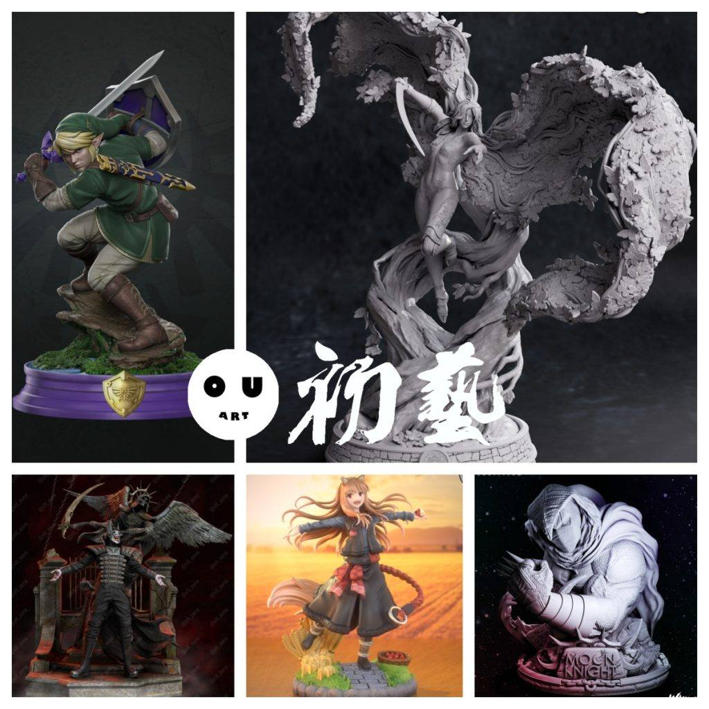
1.林克，之前分享了几个林克的模型，这个是比较好的一个，精度高细节丰富。
链接：https://pan.baidu.com/s/1RmwwSMkcTkRQklfC4dCWKQ
提取码：2w1d
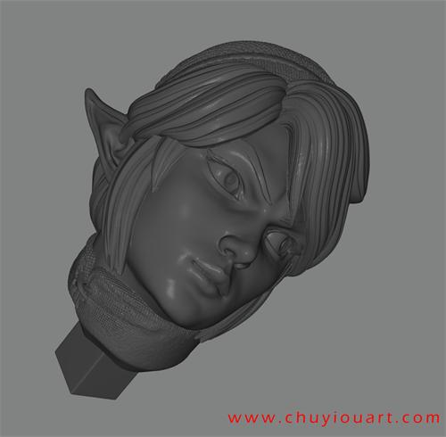
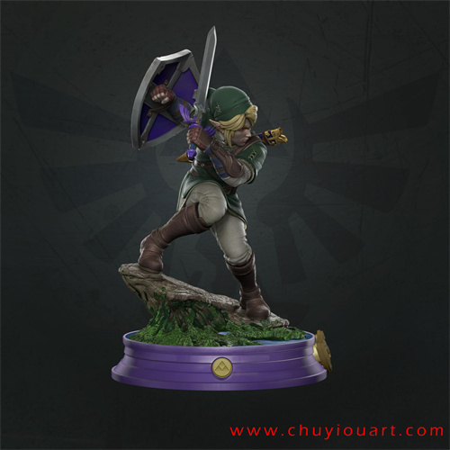
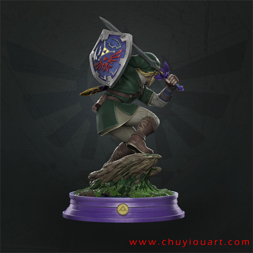

2.艾尔登法环——玛莲妮亚，二阶段女武神，众多玛莲妮亚的模型中造型最好的一个，比较还原被腐败侵蚀的中性造型。
链接：https://pan.baidu.com/s/1B9MIPU96vD6Md9iLE9MjmQ
提取码：f0as

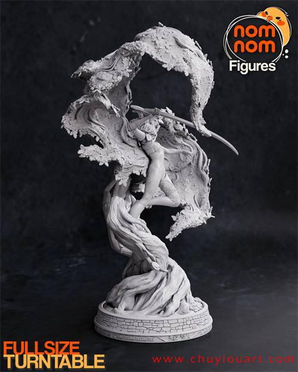
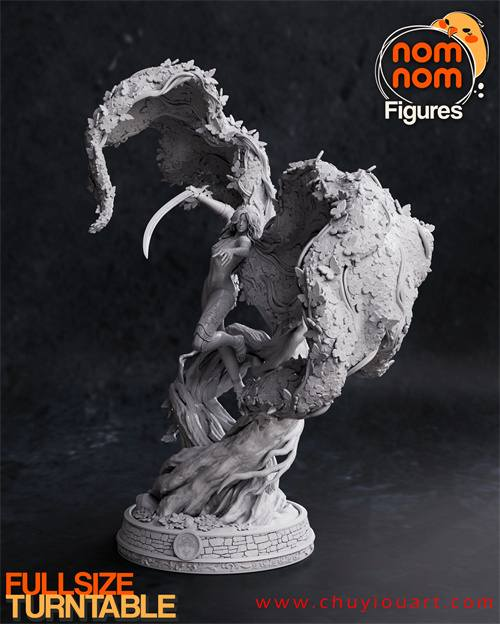
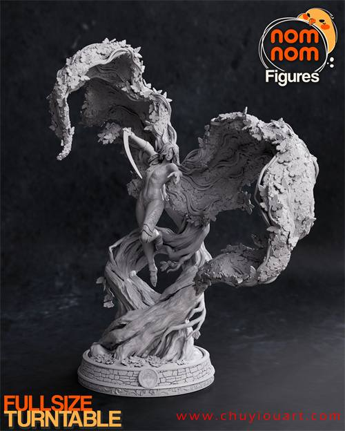

3.狂笑蝙蝠，场景和造型都很好，细节可以看截图。
链接：https://pan.baidu.com/s/1LqEl8lTgoiMBCVMUk-ebJw
提取码：1vw8


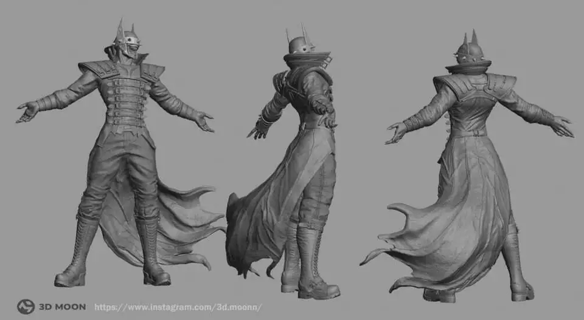
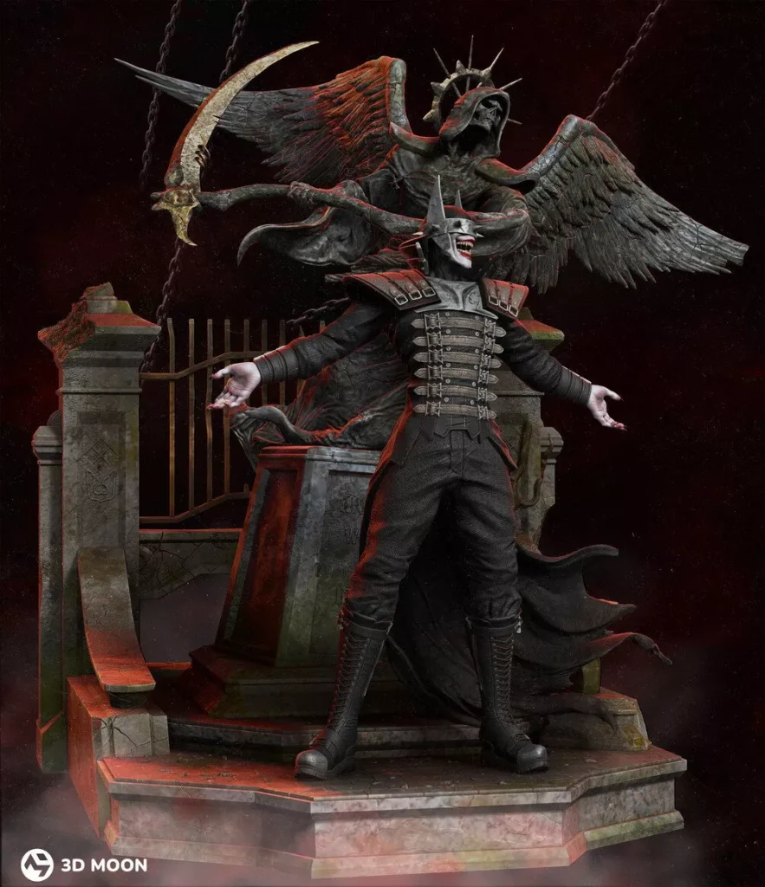
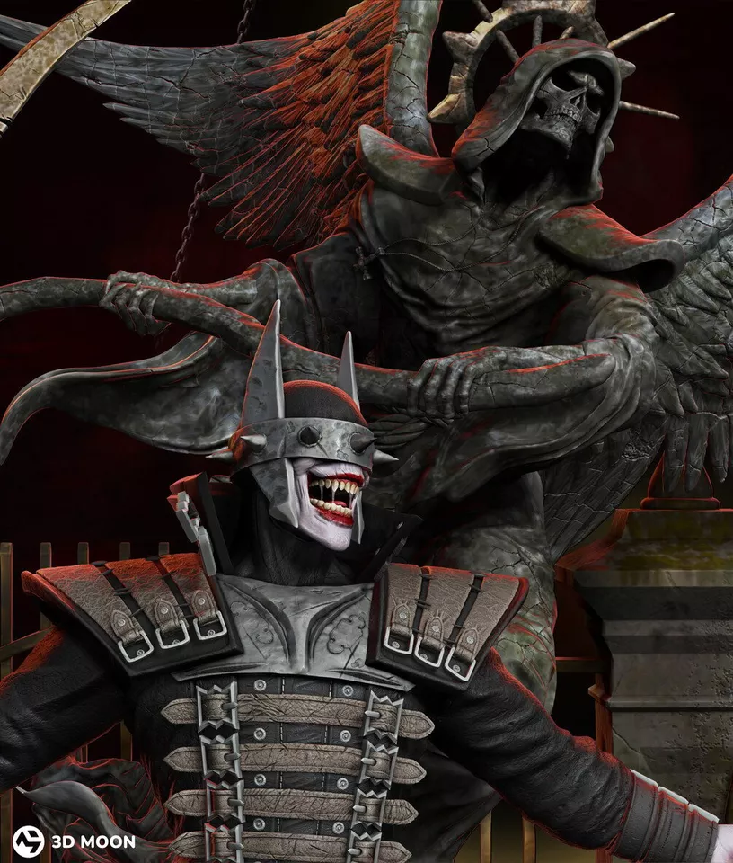
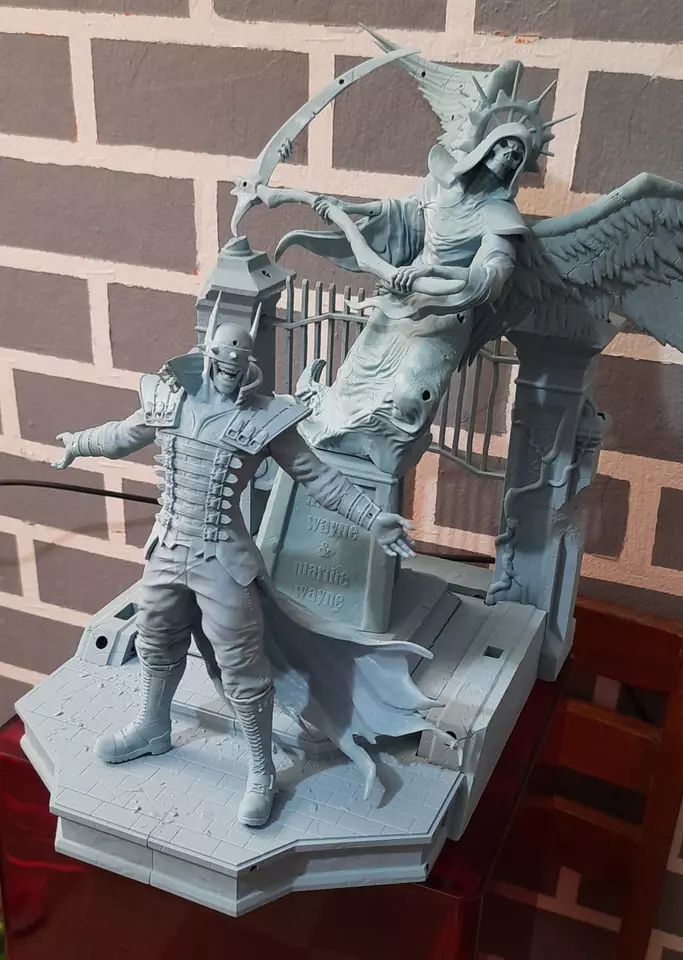
4.狼与香辛料——赫萝，分件和造型很好，动态优秀，细节看截图。
链接：https://pan.baidu.com/s/1m9yHuZGcXmag08vac8E2eA
提取码：09dz

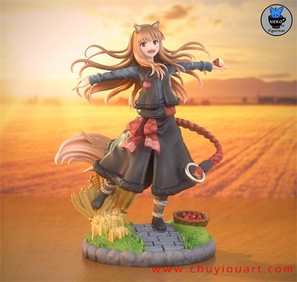

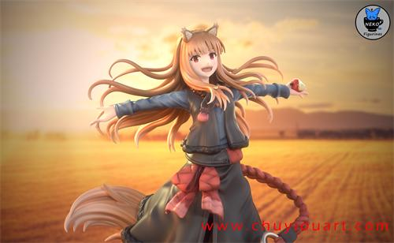
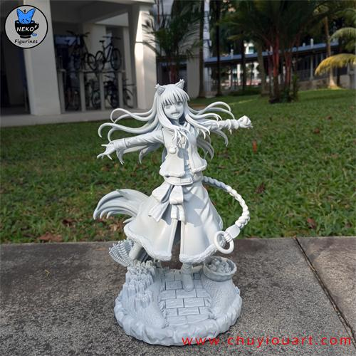
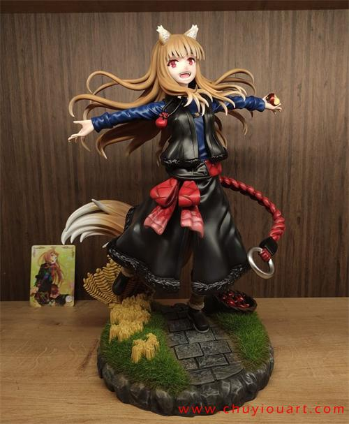

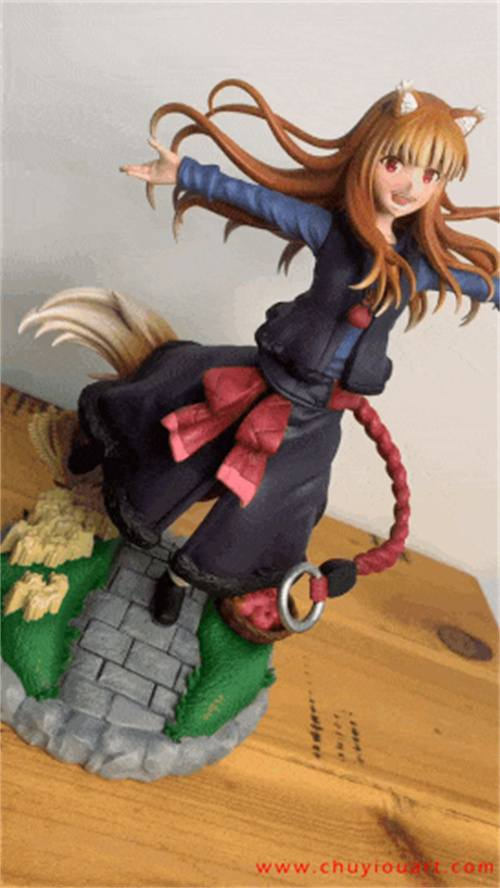


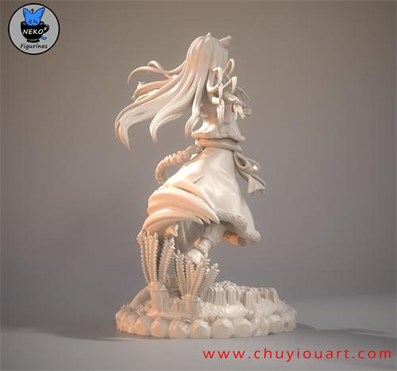

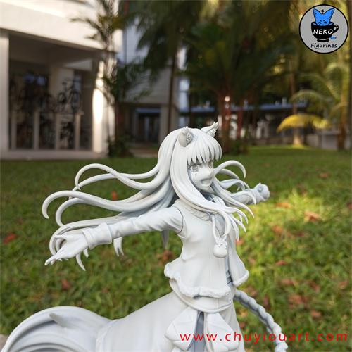


5.月光骑士胸像，力量感强，细节丰富。
链接：https://pan.baidu.com/s/1jEbpaFOOnYvOzA2hRuSoOw
提取码：6fi3
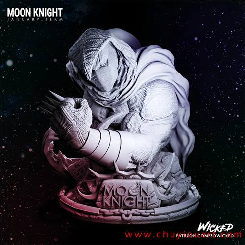

以上内容仅供个人使用（非商用）
ONLY for PERSONAL (NON-COMMERCIAL) use.
加群获得更多免费模型！